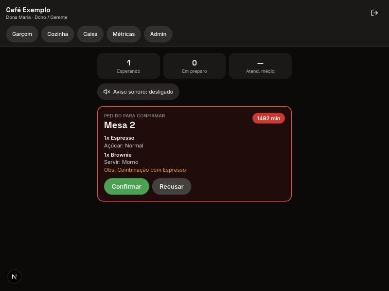
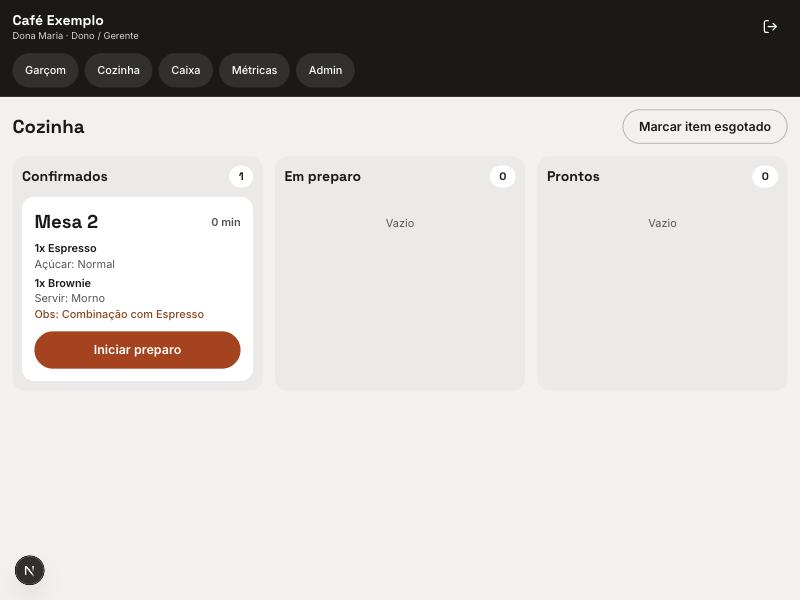
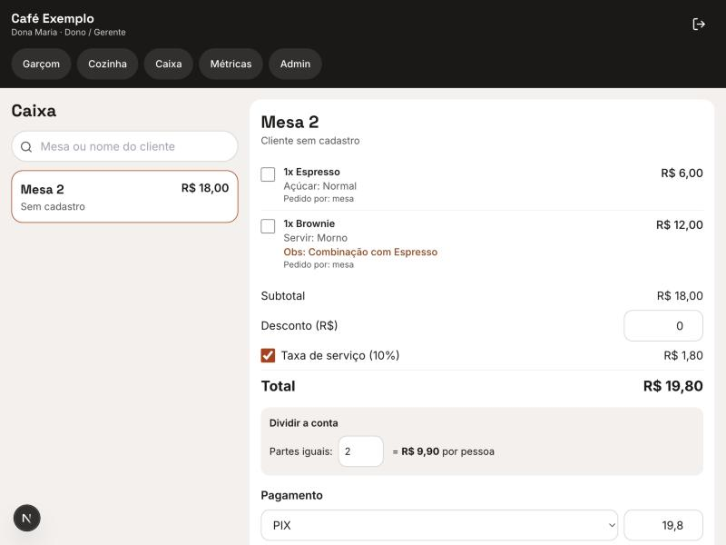
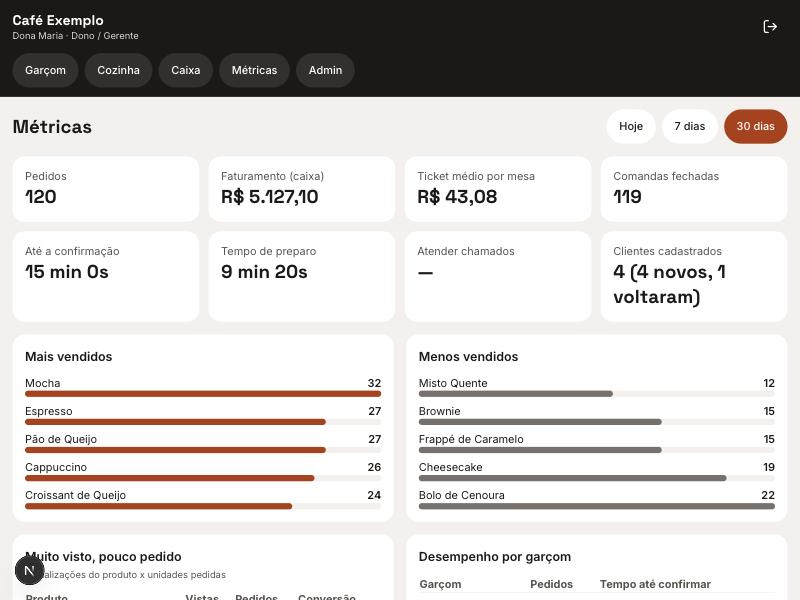
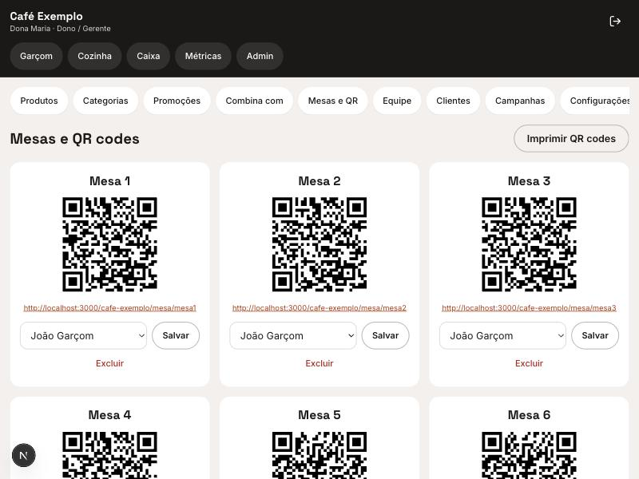

Para quem é
Para donos e gerentes de cafeterias e restaurantes que querem ver como seria a experiência do cliente e o trabalho da equipe.
Projeto de portfólio · MVP funcional
O cliente aproxima o celular da tag da mesa, escolhe e pede. O garçom confirma, a cozinha prepara e o caixa fecha a conta, tudo em tempo real.
Sobre esta página
Montei esta página para mostrar, na prática, como um cardápio digital pode funcionar em uma cafeteria ou restaurante. Em vez de só descrever a ideia, você pode abrir a demonstração e fazer um pedido de teste, como se estivesse sentado a uma mesa.
Para donos e gerentes de cafeterias e restaurantes que querem ver como seria a experiência do cliente e o trabalho da equipe.
Abrir a demonstração, escolher produtos, combinar itens, enviar um pedido e ver o status mudar. Depois, ver as telas do garçom, da cozinha, do caixa e do dono.
O café, o cardápio e os preços são fictícios, e na demonstração o garçom e a cozinha são simulados. O sistema completo existe como um MVP em fase de testes, ainda sem estabelecimentos usando.
O problema
O cliente espera o garçom passar só para fazer o pedido, e o salão perde tempo.
Anotação em papel e recado verbal para a cozinha geram erro e retrabalho.
Fechar a conta, dividir e cobrar do jeito certo demora e irrita quem quer ir embora.
Como funciona
Telas do cliente


Telas da equipe e do dono





Decisões de engenharia
Tecnologias